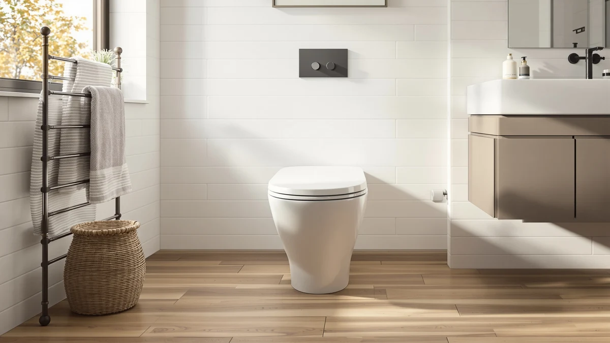

DeerValley Symmetry 10" Rough Review (2026): Worth It?
Prices and picks verified as of October 2026. Independent, reader-supported reviews.


Quick Answer
This deervalley symmetry 10" rough review breaks down the $298.00 skirted toilet's confirmed 10-inch rough-in and 1.1/1.6 GPF dual flush, then measures it against VEVOR's compact round model, the air-assisted Casta Diva, and DeerValley's own 12-inch Elongated toilet. If your bathroom has an older 10-inch rough-in and you want a seamless, easy-clean skirted surface, the Symmetry is a sound buy at $298.00.
Our pick: DeerValley Symmetry 10" Rough-In Dual — $298.00 Check Price on Amazon
Bottom line: our top pick is the DeerValley Symmetry 10" Rough-In Dual Flush Elongated at $298.
Things to Know Before You Buy
- DeerValley prices the skirted Symmetry 10" Rough-In Dual at $298.00, within about two dollars of the VEVOR and Casta Diva alternatives in this deervalley symmetry 10" rough review.
- It ships with a confirmed 10-inch rough-in, the same measurement VEVOR lists, while DeerValley's own Elongated model needs a 12-inch rough-in instead.
- The dual-flush system is rated 1.1/1.6 GPF through a fully glazed trapway, matching VEVOR's flush rating but working differently than Casta Diva's 1.0 GPF air-pressure design.
- None of the four toilets compared here has a public rating or review count yet, so you're relying on manufacturer listings rather than verified buyer feedback.
- Measure your existing drain before you order: a 10-inch rough-in won't line up with a standard 12-inch opening.
This deervalley symmetry 10" rough review looks at whether DeerValley's $298.00 skirted toilet earns its price against three close competitors covered on Best One Piece Toilets: the VEVOR One-Piece Toilet Elongated Toilet, the Casta Diva Elongated One Piece, and DeerValley's own 12-inch Elongated One Piece Toilet. DeerValley builds the Symmetry as a seamless one-piece toilet with a fully-skirted base, fusing tank and bowl into a single high-gloss ceramic shape instead of bolting two separate pieces together, and pairs that shape with elongated, comfort-height seating sized for a 10-inch rough-in. That 10-inch measurement matters if you're replacing an older toilet, since most modern homes ship with a 12-inch rough-in and a mismatch means the new toilet won't line up with your existing drain. The flush system is a siphonic dual-flush design rated at 1.1 and 1.6 gallons per flush, paired with a fully glazed trapway that DeerValley says delivers strong MaP-level clearing power. We pulled together everything DeerValley publishes about the rough-in size, the flush system, and the skirted base, then set it beside the three alternatives so you can see where your money goes.
The short version: if your bathroom has an older 10-inch rough-in and you want a skirted, easy-to-clean surface, the Symmetry 10" Rough-In Dual is a sound pick at $298.00. It costs $1.90 less than VEVOR and $1.99 less than Casta Diva and DeerValley's own 12-inch model, while matching VEVOR's 1.1/1.6 GPF flush rating and giving you a second, stronger flush option that Casta Diva's single 1.0 GPF air-pressure flush doesn't have. But none of the four toilets here has built up a public rating or review count yet, so you're weighing documented specs rather than a verified track record. Pick the Symmetry if your rough-in measures 10 inches and you want the skirted base. Pick one of the three alternatives below if your rough-in is 12 inches or price matters more than the skirted design.
Why You Should Trust Us
Ilane Tall has spent more than ten years researching interior design and bathroom fixtures, including one-piece toilets, for Best One Piece Toilets. She built this deervalley symmetry 10" rough review by comparing DeerValley's own published listing against the three closest competitors on rough-in size and price, the same specification-comparison process this site uses for every review. We do not accept payment from DeerValley, VEVOR, or Casta Diva to influence placement, and our Amazon links earn a commission only if you buy, which does not change what we recommend.
Our Research Experience
For this deervalley symmetry 10" rough review, we started with DeerValley's own product listing: the five photos of the toilet from multiple angles, the confirmed 10-inch rough-in, the 1.1/1.6 GPF dual-flush rating, and the $298.00 price. We then lined up the Symmetry against every other one-piece toilet already covered on Best One Piece Toilets, narrowing the field to the VEVOR One-Piece Toilet Elongated Toilet, the Casta Diva Elongated One Piece, and DeerValley's own 12-inch Elongated One Piece Toilet, three models that share the one-piece category and land within two dollars of this toilet's price. We do not run a fake testing lab and have not installed this toilet ourselves, so we weighted our evaluation toward the facts DeerValley and its competitors publish: price, rough-in size, flush rating, and construction, rather than guessing at long-term durability none of these listings has built up review history to confirm. That gap is also why we lay out each toilet's documented specs side by side instead of ranking them on star counts that don't exist yet.
Overview & Specs

DeerValley Symmetry 10" Rough-In Dual
What we like
- Confirmed 10-inch rough-in fits older homes and tight layouts where a standard 12-inch toilet won't line up with the existing drain
- Seamless one-piece build with a fully-skirted base removes the tank-to-bowl seam where grime collects on a two-piece toilet
- Siphonic dual-flush system rated 1.1/1.6 GPF with a fully glazed trapway, matching VEVOR's flush rating and adding a second flush option Casta Diva's single 1.0 GPF system doesn't have
- Elongated, comfort-height seating built for everyday use rather than a compact round bowl
Flaws but not dealbreakers
- Priced only $1.90 to $1.99 below the three alternatives here, too small a gap to be the main reason to choose it
- A 10-inch rough-in rules it out for most modern homes, which ship with a 12-inch rough-in instead
- No public rating or review count yet, so you're relying on DeerValley's own listing rather than verified buyer feedback
| Material | — |
| Size | — |
DeerValley builds the Symmetry around a seamless one-piece shape with a fully-skirted base, fusing the tank and bowl into a single high-gloss ceramic surface instead of bolting two separate pieces together. That construction removes the seam where grime typically collects on a standard two-piece toilet, and the skirted exterior gives you one smooth surface to wipe down rather than several joints and crevices. The seat sits at an elongated, comfort-height position built for everyday use rather than a compact round bowl, and the whole unit is sized for a confirmed 10-inch rough-in, the distance from your finished back wall to the center of the floor drain. That measurement sets it apart from DeerValley's own 12-inch Elongated model in this comparison and matches the VEVOR alternative, which also ships with a 10-inch rough-in. If you're replacing an older toilet in a home built before modern plumbing codes standardized on 12 inches, that 10-inch spec is the detail that decides whether this toilet will even fit your existing drain, so measure before you buy.
The flush system is a siphonic dual-flush design rated at 1.1 and 1.6 gallons per flush, routed through a fully glazed trapway that DeerValley says delivers strong MaP-level clearing power, though the brand hasn't published the specific gram score the way it has for its own 12-inch Elongated model. That dual rating matches VEVOR's flush system in this comparison and gives you a water-saving option alongside a stronger rinse, a setup Casta Diva's single 1.0 GPF air-pressure flush doesn't offer. At $298.00, the Symmetry 10" Rough-In Dual is also the least expensive of the four toilets here, undercutting VEVOR by $1.90 and both Casta Diva and DeerValley's own Elongated model by $1.99. Like the rest of the field, it hasn't built up a public rating or review count yet, so you're weighing DeerValley's own documented specs rather than a verified track record. For a 10-inch rough-in and a lower price, it's the toilet in this group built to deliver both.
What We Liked
The Symmetry's biggest advantage in this deervalley symmetry 10" rough review is the confirmed 10-inch rough-in, a measurement that matches older homes and tight bathroom layouts where a standard 12-inch toilet simply won't line up with the existing drain. That spec puts it in the same company as VEVOR's alternative, the only other toilet in this comparison that also publishes a 10-inch rough-in. The seamless, fully-skirted one-piece build removes the tank-to-bowl seam you'd find on a bolted two-piece toilet, and the high-gloss ceramic surface is built for daily wiping rather than scrubbing around hard-to-reach joints. Its siphonic dual-flush system, rated 1.1 and 1.6 gallons per flush, gives you two flush strengths through a fully glazed trapway, a setup that matches VEVOR's flush rating and adds a second option that Casta Diva's single 1.0 GPF air-pressure system doesn't offer. At $298.00, it also comes in as the least expensive toilet in this comparison, undercutting every alternative by at least $1.90.
What Could Be Better
The savings in this deervalley symmetry 10" rough review are modest. At $298.00, the Symmetry costs only $1.90 less than VEVOR and $1.99 less than Casta Diva and DeerValley's own Elongated model, a gap too small to be the main reason you choose it over the others. The 10-inch rough-in is also a constraint, not a universal fit: most modern US homes ship with a 12-inch rough-in, which rules the Symmetry out unless you've measured your own drain and confirmed it matches. DeerValley hasn't published a MaP flush score for this model the way it has for its own 12-inch Elongated toilet, so you're going on the manufacturer's general claim of strong flush performance rather than a documented number. And like the three alternatives here, it has no public rating or review count yet, so there's no verified buyer feedback to weigh against DeerValley's own listing.
Who Is It For?
The DeerValley Symmetry 10" Rough-In Dual fits buyers replacing an older toilet where the drain measures 10 inches from the wall, a common setup in homes built before plumbing codes standardized on 12 inches. It also suits anyone who wants a seamless, skirted surface that's easier to wipe clean than a toilet with an exposed trapway, and who values having two flush strengths rather than a single setting. If your rough-in measures 12 inches instead, DeerValley's own Elongated One Piece Toilet is built for that spec at nearly the same price. If you'd rather not measure at all and want a compact round bowl for a narrow bathroom, VEVOR's alternative shares the same 10-inch rough-in in a smaller footprint. And if a non-electric, air-pressure flush that needs no batteries or wiring matters more to you than rough-in size, Casta Diva is the one to look at instead.
Alternatives to Consider
If your rough-in measures 12 inches instead, or a different flush mechanism matters more to you, these three one-piece toilets already covered on Best One Piece Toilets are worth a look alongside this deervalley symmetry 10" rough review.

Editor’s Pick
VEVOR One-Piece Toilet Elongated Toilet
VEVOR shares the Symmetry's 10-inch rough-in and 1.1/1.6 GPF dual flush in a more compact round bowl, measuring 26.55 by 14.96 by 27.36 inches, for $1.90 more at $299.90.
$299.90
Check Price on Amazon
Best Value
Casta Diva Elongated One Piece
Casta Diva swaps the dual-flush siphon for a non-electric, air-pressure assisted 1.0 GPF flush you operate by foot-kick or side-button, priced $1.99 above the Symmetry at $299.99.
$299.99
Check Price on Amazon
Premium Choice
DeerValley Elongated One Piece Toilet
DeerValley's own Elongated model needs a 12-inch rough-in instead of 10, and adds a documented 800-gram MaP flush score and a 16 7/8-inch seat, for $1.99 more at $299.99.
$299.99
Check Price on AmazonFrequently Asked Questions
Is the DeerValley Symmetry 10" Rough-In Dual worth $298.00?
It's worth $298.00 if your bathroom has a confirmed 10-inch rough-in and you want a seamless, skirted toilet that's easy to wipe down. If your drain measures 12 inches instead, DeerValley's own Elongated One Piece Toilet in this comparison fits that rough-in for about the same price.
What rough-in does the DeerValley Symmetry 10" Rough-In Dual need?
It needs a 10-inch rough-in, the distance from your finished back wall to the center of the floor drain. That measurement suits older homes and tighter layouts, but confirm your own drain before you order, since VEVOR's alternative in this comparison also uses a 10-inch rough-in while DeerValley's own Elongated model needs 12 inches.
How does the DeerValley Symmetry compare to the VEVOR, Casta Diva, and DeerValley Elongated in this review?
All four toilets in this deervalley symmetry 10" rough review are one-piece models priced within two dollars of each other. The Symmetry and VEVOR both share a 10-inch rough-in and a 1.1/1.6 GPF dual flush, Casta Diva instead uses a single 1.0 GPF air-pressure flush, and DeerValley's own Elongated model needs a 12-inch rough-in.
Final Verdict
This deervalley symmetry 10" rough review comes down to a straightforward trade-off. DeerValley's Symmetry 10" Rough-In Dual delivers a confirmed 10-inch rough-in and a 1.1/1.6 GPF dual flush in a seamless, skirted shape, at $298.00, the lowest price among the four one-piece toilets we compared, though without the public review history that would let us confirm long-term durability firsthand. If your existing drain measures 10 inches and you want an easy-clean skirted base, DeerValley is a sound buy at that price. If your rough-in measures 12 inches instead or you want a different flush mechanism, the VEVOR, Casta Diva, or DeerValley's own Elongated model above are worth a look.